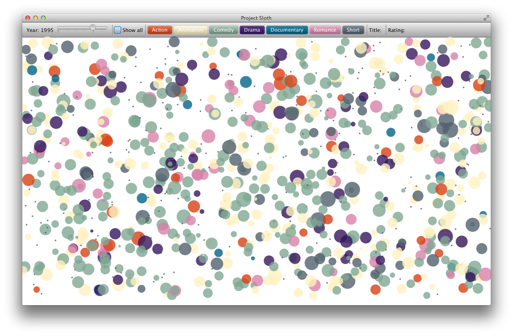
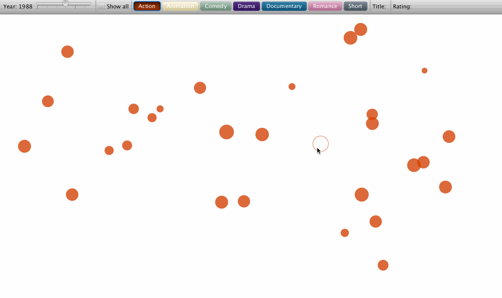
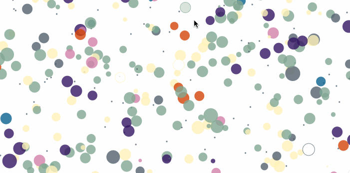
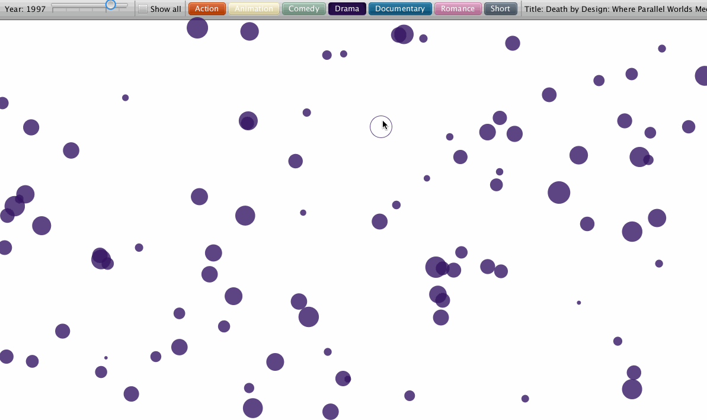
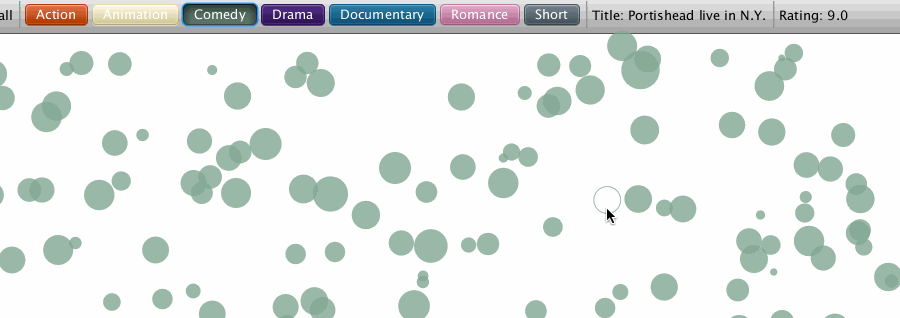

This is a personal project that I've recently worked on. The objective of this project is to allow myself to explore and experiment what can be done by combining JavaFX and CSV data. This page will not be the same as other portfolio project pages on this site as I want this to be a project showcase and a blog post about the project, because why not?
Before I started working on this project, I knew I wanted to work with CSV data and JavaFX. I just wasn't sure what kind of data I'm interested in working on. I came across a movie dataset in CSV file format that has ratings information about movies and I felt that this would be a fun and interesting project to work on. In this post, I will discuss about the features implemented into the visualization, approaches and challenges that came up during the development process. Source code can be accessed through GitHub.
The UI of the applcation is split into two parts, the canvas and the control toolbar. The canvas holds all the drawings and manipulations of the circles while the toolbar holds necessary UI control components that allows the user to interact with the data. These are the UI control components.
Various interactions are also implemented in this application. Circles change the fill and stroke color when mouse is hovered over and change back when the mouse leave.
 Circles can also be moved independently around the canvas.
Last but not least, the title and rating of the movie is displayed on the toolbar when the circle is clicked.
Obviously, this project can be improved. My future plans for this project are to implement a search option that allows the user to type in the movie's title. Other search filter algorithms should be implemented as well such filter the movies by ratings. I'd also like to improve the application in a way that would support a movie with multiple types of genres because currently it can only switch between any individual genre.